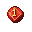
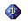
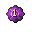
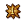
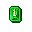
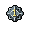
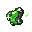
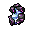
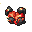

Guia rapido
O que sao
Elemental Stones sao itens colocados em equipamentos para ganhar bonus extras.
Progressao
Cada stone possui elemento, nivel de 1 a 10 e bonus que aumentam conforme o nivel.
Build
Raridade define quantas stones cabem no item, tornando o sistema essencial para builds endgame.
Onde cada bonus funciona
Arma
+% dano do elemento.
Armor / Legs
+% defesa do elemento.
Helmet
Bonus especial que depende da stone.
Boots
Bonus secundario que depende da stone.
Bonus de cada Stone

Fire Helmet: Ruse (%) Boots: Life Leech (%)
Ice Helmet: Transcendence (%) Boots: Mana Leech (%)
Energy Helmet: Momentum (%) Boots: Mana Maxima (%)
Holy Helmet: Onslaught (%) Boots: Loot (%)
Earth Helmet: Critical Chance (%) Boots: Max HP (%)
Physical Helmet: Critical Damage (%) Boots: SpeedUpgrade de stones
Receita base
Use 3 stones do mesmo nivel para tentar subir uma stone para o proximo nivel.
Falha
Voce nao perde as stones; perde apenas o gold do upgrade ou parte dele.
| Evolucao | Chance | Custo |
|---|---|---|
| 1 -> 2 | 75% | 2kk |
| 2 -> 3 | 70% | 5kk |
| 3 -> 4 | 65% | 10kk |
| 4 -> 5 | 60% | 20kk |
| 5 -> 6 | 50% | 40kk |
| 6 -> 7 | 35% | 75kk |
| 7 -> 8 | 25% | 200kk |
| 8 -> 9 | 20% | 600kk |
| 9 -> 10 | 15% | 900kk |
Sistema de slots e raridade
| Raridade | Slots |
|---|---|
 Raro | 1 slot |
 Epico | 2 slots |
| Legendary | 3 slots |
 Mystic | 4 slots |
Stones repetidas
Stones repetidas so funcionam em Weapon, Armor e Legs.
Helmet e Boots
Foco nos bonus especiais de cada elemento.
Identificacao de itens
Tool Identification Potion
-
 Tool Identification Potion
Tool Identification Potion
- Rare: 75%
- Epic: 20%
- Legendary: 5%
- Mystic: 0%
Tool Revelation Luck Potion
-
 Tool Revelation Luck Potion
Tool Revelation Luck Potion
- Rare: 0%
- Epic: 70%
- Legendary: 27%
- Mystic: 3%
Remocao de stones e raridade
Item removedor
-
 Tool Rarity Remove
Tool Rarity Remove
- Possui 3 cargas.
- Remove primeiro as stones.
- Depois remove a raridade.
Regras
- Para remover raridade, o item precisa estar sem stones.
- Apos remover raridade, o item fica broken.
- Item broken nao pode receber stones.
Recuperação
- Ao remover raridade, voce recebe uma stone da raridade na Store Inbox.
- Use essa stone no item broken para restaurar a raridade.
- Depois disso, as stones podem ser colocadas novamente.
Onde dropar stones lvl 1
.gif)
Stone Bag Level 1
Pode dropar em hunts especiais, hunts custom e nas criaturas atualizadas abaixo.
Dica final
Comeco
Use stones low level, que sao mais baratas.
Mid game
Foque em Epic e Legendary.
End game
Monte builds com Mystic + stones level 10.